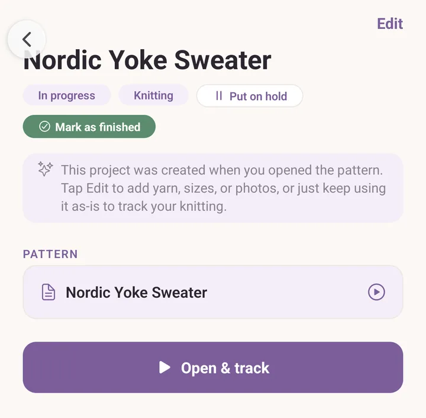
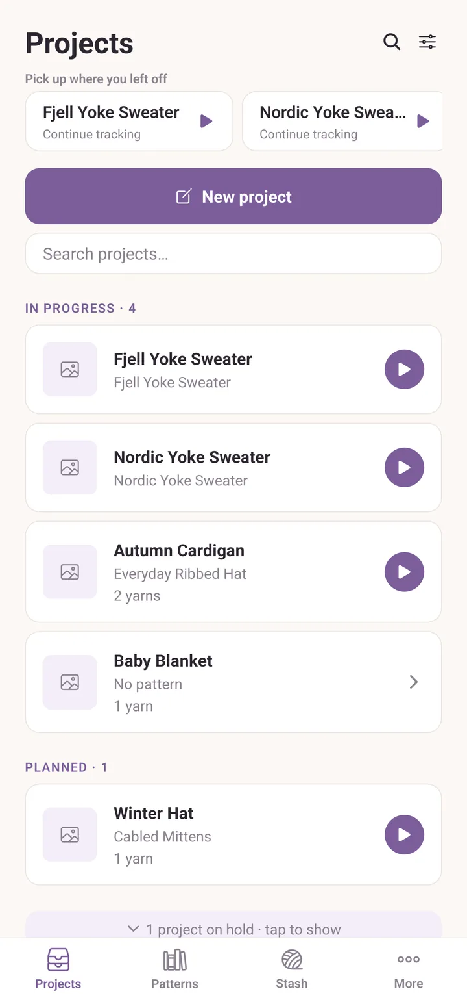
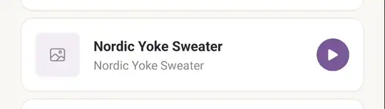
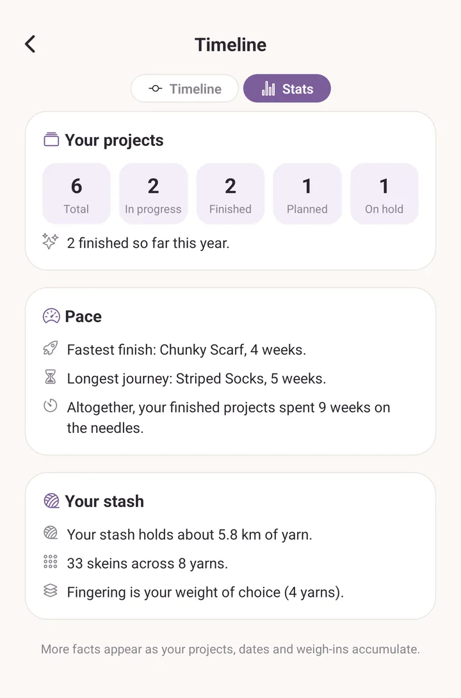

Projects
A project is "I'm making this thing." It pulls a pattern, your yarn, and your progress into one place, plus photos as you go and the actual gauge you got (which can differ from the pattern's expected gauge).
Starting a project
Two ways in:
- From the Patterns tab. Tap a pattern, then Open. Purl makes a project for that pattern on the spot, named after it and already In progress, so you can start reading without filling in a form first. Nothing about it is locked; it is a normal project that happens to be mostly empty.
- From the Projects tab. Tap New project for the full editor: name, status, craft, pattern, yarn, dates, photo, notes, size and needles.
The first way is friction-free. If you never get around to filling in the rest, that project still holds your progress, your counters, your highlighting and your notes on the pattern.
Open the same pattern again tomorrow and Purl takes you back to the project you already have. It does not pile up duplicates.
Projects Purl made for you
A project created this way opens with a short note telling you it was made when you opened the pattern, and inviting you to tap Edit to add yarn, sizes or photos. The note goes away once the project has something in it. There is no badge and nothing to promote: fill in as much or as little as you want to.

Picking yarn
Tap Edit, then under Yarn tap Add yarn from your stash. The Choose yarn picker opens. Several yarns are fine: held double, a contrast colour, all of it. Each one becomes a row on the project, with a Need box for the skeins you expect to use and, later, what you actually used.
The project page
Opening a project shows you everything at a glance:
- The cover photo at the top, with Edit beside it.
- Buttons for where the project is up to: Put on hold, which reads Resume once it is on hold, Mark as finished, and once it is finished, Reopen.
- Pattern, with Open & track to start reading.
- Yarn, one row per yarn, each showing what is left in your stash and what this project has used, plus a speedometer button for weighing in. Type a figure into the yarn's Need field and the row shows that too.
- Details: the size you are making, your needles or hook, and your gauge with a calculator icon beside it.
- Start and finish dates.
- Gallery of photos.
- Notes. Links in your notes are tappable.
Weighing in yarn
The speedometer button on each yarn row opens a small sheet for grams (or meters) consumed. Save and the matching yarn in your stash decrements automatically (using whichever conversion is most accurate). Adjust it later, the stash recomputes from the latest weigh-in.
This is also how Purl tells you how much yarn a project actually used, after the fact, for your records.
Four statuses
- Planned: you have an idea but haven't started.
- In progress: you're knitting it.
- On hold: you have set it aside, but you have not given up on it.
- Finished: done.
The Projects tab groups them in that order. On hold and Finished projects collapse into a single line at the bottom of the list, reading something like "3 projects on hold, tap to show". Tap the line to bring them back into view. That way a shelf full of hibernating jumpers does not sit between you and the thing you are actually knitting.
Three ways to change a status:
- Swipe a project card from left to right. What you get depends on where it is: Start a planned one, Pause one in progress, Resume one on hold, Re-open a finished one. A short message appears afterwards with an Undo, so a stray swipe never quietly shelves something.
- Use the buttons at the top of the project page.
- Set the status yourself in the editor.
Dates and status stay in step. Mark a project In progress with no start date and Purl stamps today as the start. Mark it Finished with no finish date and today becomes the finish. Give a Planned project a start date in the past and it moves itself to In progress.

Deleting a project
Swipe a project card from right to left to reveal Delete, then confirm. Nothing is really gone: deleted projects sit in More > Backups & history for 30 days, and you can put them back from there.

Photos
Add photos from the Gallery section: Add photo, then Take photo or From library. Each photo can carry a note about what is happening in it.
Tap a photo to open it full screen. Pinch to zoom, drag to move around once zoomed, and double-tap to reset. Prev and Next step through the rest, and the header keeps count.
The first photo in the gallery is the project's thumbnail. To promote a different one, open it full screen and tap the star. The star fills in to show which photo is currently the thumbnail.
Actual gauge
Pattern says "22 sts by 30 rows over 10 cm." You knit a swatch and got "20 sts by 28 rows over 10 cm." Record what you got as Actual gauge in the editor: stitches, rows, the span they were measured over, and a note if you want one (say, that it was measured after blocking).
On the project page, tap the calculator icon next to the gauge and the calculator opens already filled in with your gauge, so you can resize a stitch count or work out even shaping without retyping it.
Needles and hooks
A project can use several sizes: the cuff on 2.5 mm, the body on 3 mm. In the editor, type a size and tap Add, or tap one of the chips under From your stash and past projects. Those suggestions come from the equipment you own and the sizes you used on earlier projects, so the list gets more useful the more you knit.
When a chart is the whole pattern
A project does not need a PDF. Any chart you have drawn in the Colour charts can be the project's pattern: in the editor's pattern picker, your charts are listed alongside your written patterns and your PDFs, each showing its size. Pick one and Open & track takes you straight into the chart tracker, which keeps your place row by row exactly as a written pattern would.
When the pattern is a video
A pattern can be a YouTube video. In the editor, tap Choose a pattern (or Add another pattern), then Add a link instead, paste the video's link and tap Use link. The field under the link takes a name, such as "Cast on" or "Heel". Without one, Purl calls it Video 1, Video 2 and so on.
Open & track then plays the video inside Purl, with the project's counters and notes beside it or below it. Start the video with the play button in the video itself. After that, Purl's own play and Back 10 s buttons work too, and Speed slows it down for a tricky bit. A project with several videos shows one tab per video.
Purl remembers, for each video:
- where you stopped, so it opens at the same place, paused;
- the speed you chose;
- its own counters.
Switching tabs, closing the view or leaving the app pauses the video. A link to anything other than a YouTube video still opens in your browser.
Pick up where you left off
The top of the Projects tab shows a strip called Pick up where you left off: the three projects you most recently opened to read, finished ones excluded. One tap puts you back where you were.
Project timeline, and Stats
More > Project timeline opens a screen with two halves. The Timeline / Stats buttons at the top switch between them, and Purl remembers which you were last looking at.
Timeline draws your projects as bars over the months. Colour says which stage each one is in, and a legend across the top spells the colours out: Planned, In progress, On hold, Finished, plus the line marking Today. Tap a bar and Purl asks whether to open that project.
Two controls keep it readable. Show filters to the last 6 months, 1 year or 2 years, or All, which stops one very old project from squeezing everything recent into a sliver. The zoom buttons beside it stretch the bars out; Fit returns to the whole range on one screen.
Stats is the same data read a different way: a stack of plain sentences about your knitting, each one appearing only once there is enough history for it to mean anything. It comes in five parts:
- Your projects: how many in total, in progress, finished and planned, and how this year compares with last.
- Pace: your fastest finish, your longest one, your average, how long a project waits before you cast on, and how long your current work in progress has been on the needles. Time a project spent on hold is left out, so pausing something for a year does not make you look slow.
- Yarn: how much yarn your weighed-in projects have used altogether, the average per project, and which project ate the most.
- Habits: which day of the week you tend to start on, which month you tend to finish in, and your knitting-to-crochet split.
- Your stash: how many kilometres of yarn you own, your favourite brand, the weight and the colour family you lean towards, and roughly how many more projects it would cover.
A new library sees only a line or two here. It fills out on its own.

Gallery
More > Gallery collects every photo you have added, across every project and every pattern you wrote yourself, newest first, with the note you gave it. Tap one to see it full size and jump to the project it came from. It is read-only: photos are added and deleted inside the project itself, so there is never a question about where they live.
Yarn you do not have yet
Purl will not buy yarn for you, but it will keep the list. If the project needs a yarn your stash is short of, open that yarn in the Stash tab and tap Add to shopping list, or swipe its row and choose To buy. Flagged items gather behind the cart icon in the Stash header, yarn and tools together, and the share button there sends the whole list as plain text to whoever is going to the shop.
The full story is in Yarn stash.
See also
- Yarn stash: the yarn that goes into a project, and how weigh-ins interact.
- Patterns: what you knit.
- PDF tools: what's available in the PDF viewer that a project will route you into.
- Backups and recovery: if you delete a project by mistake, it's recoverable for 30 days.